Right where you left it.
Your music stays on your drive. Crate Dig doesn’t rename, move, or change your original files.
LOADING THE STACKS…
Crate DigFOR THE IDEAS YOU ALMOST FORGOT.
Turn your music folders into a collection worth digging through.
Dig a little deeperLESS SEARCHING. MORE MAKING.
Crate Dig brings your projects and samples into one place.
So you can get back to the part you love.
Your projects, versions, and samples. Together in one clean view.
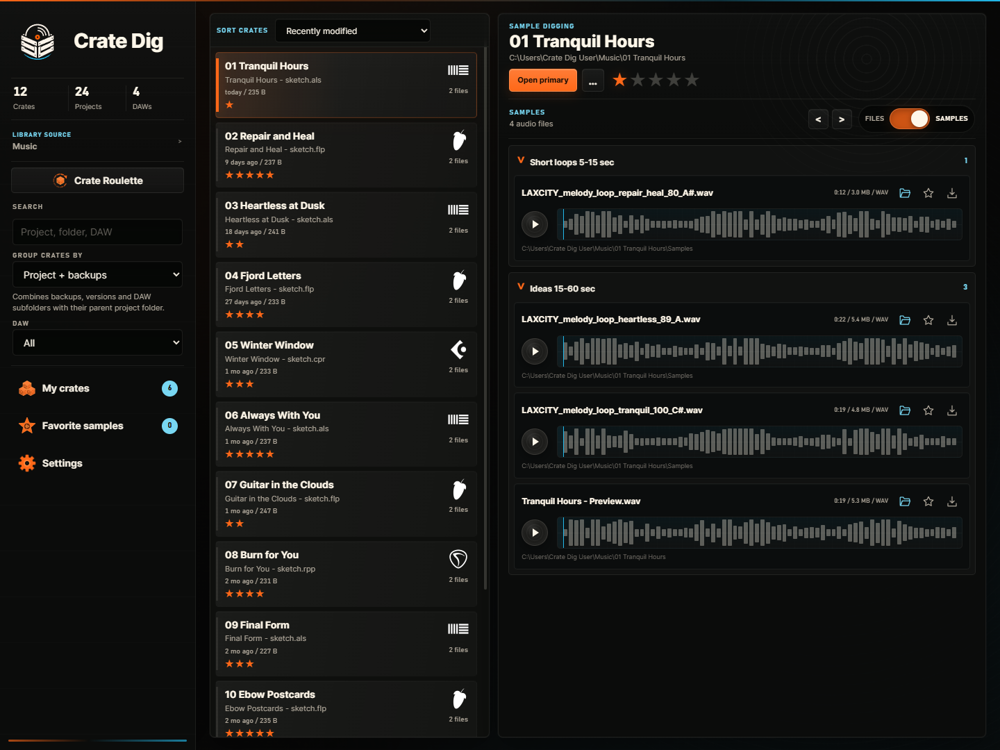
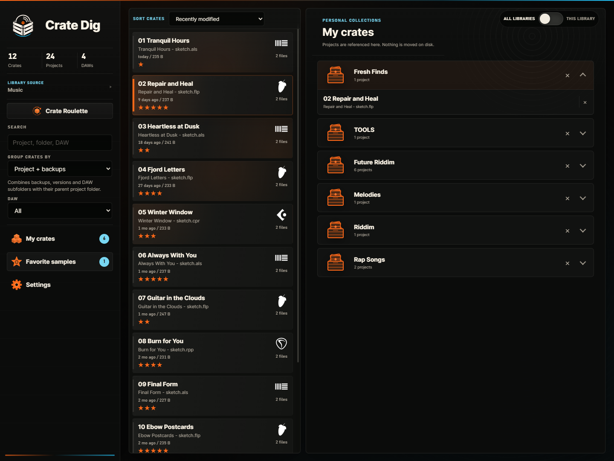
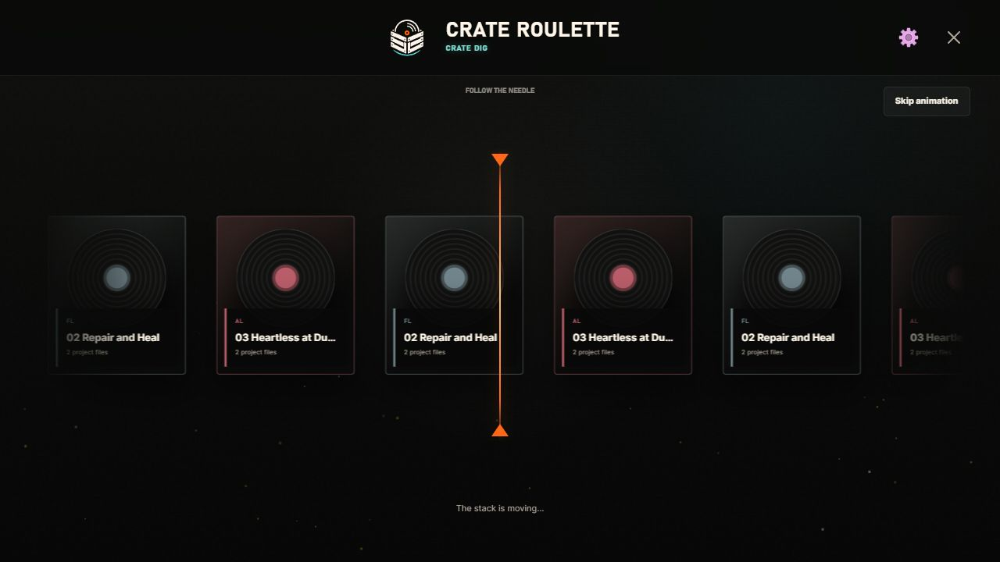
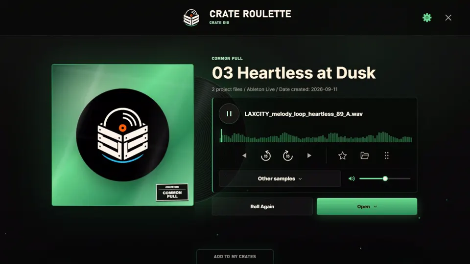
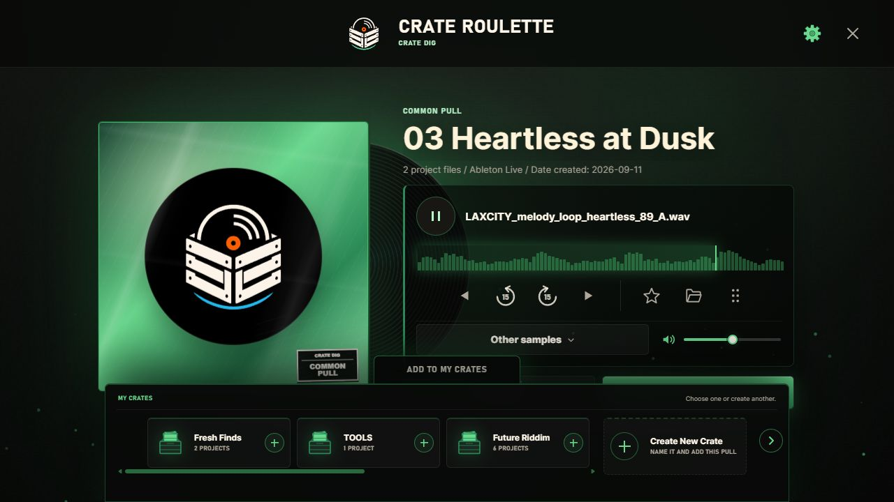
FOLLOW A HAPPY ACCIDENT
Crate Roulette pulls a project or sample from your collection. Sometimes a little chance is all you need.
Find your next ideaYOUR PROJECTS. YOUR TOOLS.
Ableton Live
FL Studio
CubaseREAPERPro Tools
Bitwig StudioReason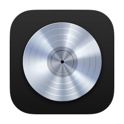
Logic Pro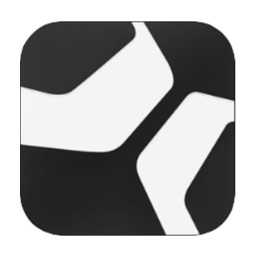
Studio One03 — KEEP WHAT MAKES IT YOURS
Your music stays on your drive. Crate Dig doesn’t rename, move, or change your original files.
Rate projects, favorite samples, and organize My Crates around whatever you want to make next.
Preview samples, scrub waveforms, and open projects in their associated DAW. Less folder hopping. More flow.
THERE’S SOMETHING GOOD IN THERE.
Your unfinished ideas deserve another listen.